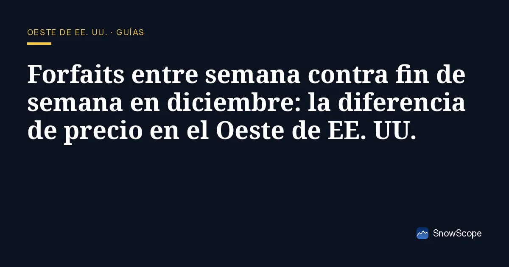
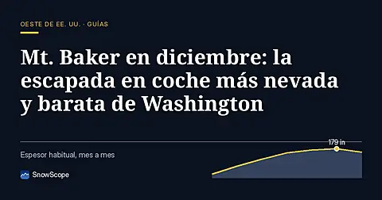

Forfaits entre semana contra fin de semana en diciembre: la diferencia de precio en el Oeste de EE. UU.
A mediados de diciembre, la mayoría de las estaciones de esquí del Oeste de EE.UU. tienen buenas probabilidades de nieve. La pregunta para esquiadores con presupuesto limitado es si apostar por un fin de semana, cuando suben los precios, o tomarse los días de entre semana libres y ahorrar la diferencia. Siete estaciones de nuestra lista publican una tarifa entre semana que supera la tarifa de fin de semana de verdad.
Consulta la previsión de nieve en tiempo real de US West en la app SnowScopeEspesor de nieve, alertas de nieve polvo y mapa 3D, gratis.
Dónde el descuento entre semana es más pronunciado
Ski Cooper lidera la lista: $49 de lunes a viernes frente a $99 fines de semana y festivos es una diferencia de $50. Timberline ahorra $32 (temporada baja $129, temporada alta $161 fines de semana y del 21 de diciembre al 1 de enero). Lookout Pass ahorra $12 en un forfait reservado ($63 entre semana, $75 fines de semana, $79 festivos). Montana Snowbowl y Mt. Baker ofrecen cada una descuentos más pequeños, pero cada dólar cuenta cuando estás planificando un viaje.
Wolf Creek destaca: no diferencia por día de la semana. En su lugar utiliza fechas de temporada alta fijas: del 20 al 23 de diciembre y del 26 al 31 cuestan $110; todos los otros días son $96. Esto significa que un sábado antes del 20 es un día de precio regular. White Pass usa precios dinámicos en línea, comenzando desde $69 temporada baja y $89 temporada alta, pero la diferencia base existe si compras con anticipación.

¿Habrá nieve cuando ahorres dinero?
La ganga entre semana solo funciona si encuentras nieve un martes, no un sábado. Mirando atrás en 46 inviernos anteriores, las probabilidades de al menos 50 cm a media montaña antes del 15 de diciembre son más altas en Mt. Baker (93 %), White Pass (87 %), Lookout Pass (85 %) y Montana Snowbowl (83 %). Timberline alcanza el 78 %, Wolf Creek el 72 % y Ski Cooper el 70 %.
Las profundidades típicas a mediados de diciembre van desde 66 cm en Ski Cooper hasta 116 cm en Mt. Baker y 132 cm en Timberline. Incluso las estaciones más bajas —Montana Snowbowl, Lookout Pass y Ski Cooper— promedian bien por encima del límite de supervivencia para entonces. La temporización tiene sentido: a mediados de diciembre la temporada tiene dos meses de antigüedad en toda la región.
¿Qué semana de diciembre gana?
La segunda y tercera semana de diciembre (del 7 al 20 de diciembre) ofrecen la mejor combinación de probabilidades de nieve y precios bajos. Para entonces, todas las estaciones de esta lista tienen al menos un 61 % de probabilidad de tener 50 cm o más. Ski Cooper alcanza el 72 % del 14 al 20 de diciembre. Lookout Pass y Montana Snowbowl ambas están en el 83 % en esa misma ventana. Timberline, White Pass y Mt. Baker superan todas el 85 %.
A partir del 21 de diciembre, los precios suben y empieza la temporada alta en algunas estaciones, pero las probabilidades de nieve se mantienen altas o mejoran. Si necesitas viajar durante las vacaciones, la tarifa de día regular de Wolf Creek del 1 al 19 de diciembre y de nuevo del 24 al 25 de diciembre ofrece una pequeña ventaja. Mt. Baker, que no tiene forfaits multidia y vende solo forfaits diarios, tiene un 98 % de probabilidades de nieve del 14 al 20 de diciembre.
Cómo el descuento se suma en un viaje
Un viaje de cuatro días entre semana en Ski Cooper ahorra $200 ($49 por cuatro días) en comparación con el precio de fin de semana. Incluso en Montana Snowbowl, donde la diferencia es menor, dos días entre semana ahorran $14. La verdadera victoria viene de la planificación: tómate los lunes a jueves libres en la segunda semana de diciembre, esquía cuatro días, y evitas tanto la multitud de fin de semana como el precio de temporada alta. Para entonces la nieve probablemente ya sea lo suficientemente profunda para esquiar cómodamente.
Si necesitas incluir un fin de semana, elige tu estación cuidadosamente. En Ski Cooper, añadir un viernes te mantiene en la tarifa entre semana. En Wolf Creek, un sábado antes del 20 de diciembre es un día de precio regular. Mt. Baker cobra la misma tarifa cada día que está abierta, así que no hay penalización por una visita de fin de semana allí.
Consejos para esquiadores
- Reserva un viaje de lunes a jueves en la segunda o tercera semana de diciembre: las probabilidades de nieve son altas en todas las estaciones, y evitas tanto las multitudes de fin de semana como los precios de temporada alta.
- En Ski Cooper y Timberline, el descuento entre semana merece la pena planificar. En las montañas más pequeñas, los ahorros son menores pero la nieve sigue siendo fiable a mediados de diciembre.
- Reserva Lookout Pass con anticipación para su tarifa en línea entre semana. White Pass también recompensa la reserva anticipada con su precio mínimo de temporada baja.
- Si las vacaciones son inevitables, consulta el calendario de temporada alta de Wolf Creek: una visita el 19 de diciembre es más barata que el 20 de diciembre.
- Mt. Baker vende forfaits solo el día y no ofrece descuento entre semana, así que presupuesta en consecuencia y llega temprano.
Sobre estas cifras
Los espesores de nieve de las estaciones son la nieve más profunda en las pistas altas en la fecha indicada; son estimaciones para una zona, no una medida en un punto. Las previsiones pueden cambiar. Consulta siempre el boletín oficial de aludes antes de salir fuera de pista.
Citar este informe
Para investigación, docencia o prensa: cifras y gráficos reutilizables libremente bajo CC BY 4.0 con esta cita.
SnowScope (2026), Forfaits entre semana contra fin de semana en diciembre: la diferencia de precio en el Oeste de EE. UU., https://snowscope.app/blog/es/2026/11/weekday-vs-weekend-ski-tickets-december-us-west.html, consultado el 2026-11-15
SnowScope (Atlas Labs). (2026, November 15). Forfaits entre semana contra fin de semana en diciembre: la diferencia de precio en el Oeste de EE. UU.. SnowScope snow reports. https://snowscope.app/blog/es/2026/11/weekday-vs-weekend-ski-tickets-december-us-west.html
BibTeX
@misc{snowscope2026weekdayvsweekendskiticke,
author = {{SnowScope (Atlas Labs)}},
title = {Forfaits entre semana contra fin de semana en diciembre: la diferencia de precio en el Oeste de EE. UU.},
year = {2026},
month = nov,
howpublished = {\url{https://snowscope.app/blog/es/2026/11/weekday-vs-weekend-ski-tickets-december-us-west.html}},
note = {Published 2026-11-15 09:34 UTC; accessed 2026-11-15}
}· CC BY 4.0 · Métodos, datos y herramientas →
Sigue US West
Gratis: un aviso cuando llega la nieve y la previsión cada mañana.
Más partes de nieve

Wolf Creek tiene 87 cm a media montaña el 15 de diciembre típico. Los precios máximos comienzan el 20 de diciembre. Datos: 13 de noviembre de 2026.

White Pass recompensa las reservas anticipadas entre semana. A mediados de diciembre, la media montaña acumula 102 cm en un año típico. Datos del 13 de noviembre de 2026.

Mt. Baker en diciembre: 46 in (116 cm) de nieve a media montaña en un 15 de diciembre típico, y un forfait de 98,80 $ de lunes a jueves, que solo se vende el mismo día en taquilla.